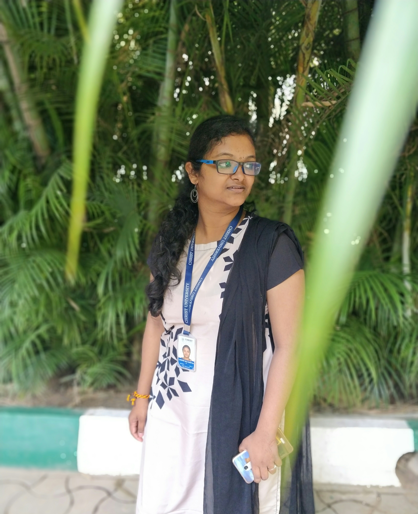

Ms.Subasri Kumar
Managing director,
The Knot
|
Ms.Subasri Kumar Managing director, The Knot |
Ms.Suba Kumar acting as Managing Director of the full-service luxury wedding and event planning company,Suba leads the Wedding Planner team with over 3 years of experience in event design and event management having curated uniquely bespoke luxury weddings and specialised events at prestigious five-star locations across three different continents, some as sizable as 700 guests. As a Wedding Planner, suba has built a trusted network of expert vendors and vast industry resources across Europe, Asia, and Africa. Suba has a background in multimedia business development and has studied major event management at City, University of London as well as the United Kingdom Alliance of Wedding Planners. Suba has a BA degree with Honours in French and Spanish. |
| Ms.Charitha Kumar is expert in designing the best wedding decorations, and the best theme decorations as well for all kinds of weddings in every type of tradition.Our services cover decoration for convention halls, wedding backdrop decoration, engagement ceremony decoration, mandap decoration, party decoration and more.She see every event as our canvas, and flowers and designs as our artistic touches to transform and lend grandeur to the event. Our styles range from the traditional to the glamorous. We strive to deliver the absolute best to our clients for professional décor that stands out and captures the mood and vibrancy of the occasion. |
 Designer,The Knot |
 Ms.Shruthi Kathiraven Makeup Artist,The Knot |
Ms.Shruthi is a hairstylist and makeup artist in the fashion industry from Kollam,Kerala, India. Her work regularly appears in advertising campaigns catwalk shows, fashion films, and editorials. She started her career as a hair stylist and moved on to Make-up. When shruthi started her first salon it was called Visions by shruthi. She later decided to develop it as a brand. At present shruthi is a brand by itself |
| Mr.Praveen Kumar is a Photographer with 3 years of experience working with audiovisual arts. After completing his Master’s degree in Film & Media Production from Queensland College of Art. He then helped set up and managed photo and video editing and media publishing operations for America Online’s global business, before taking the plunge to set up his own firm, and apply his learning and experience across a wide array of fields. Sudeep’s creativity is driven by an insatiable curiosity of life, and a desire to experiment, explore and discover. |
 Mr.Praveen Kumar Photographer,The Knot |